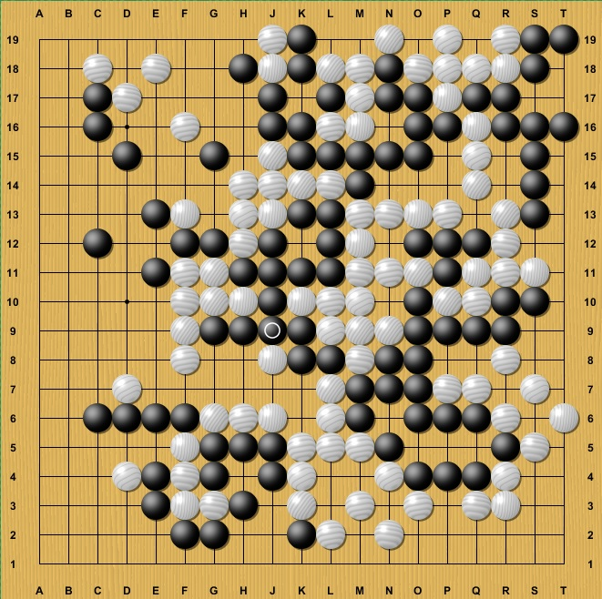
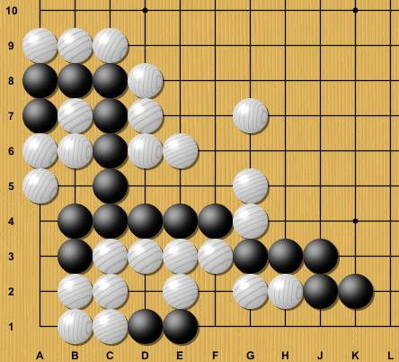
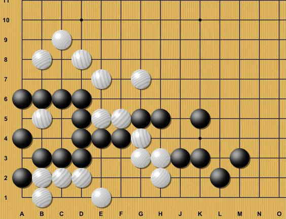
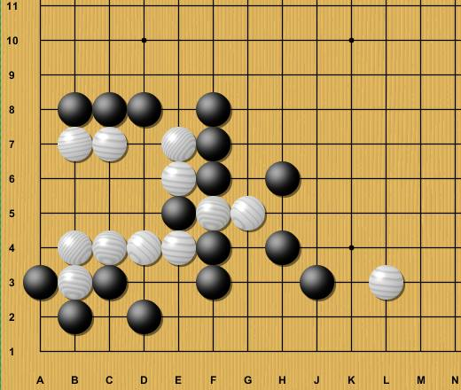
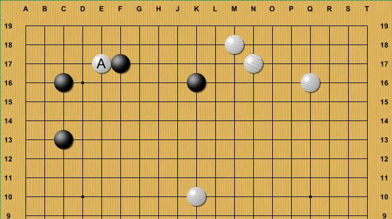

Partie 1
Position finale de la partie jouée entre le gagnant de la ligue Haohan et Pavol Lisy, professionnel européen jouant avec blanc sans le Komi. Noir gagne par abandon !

Partie 2
Tsumégo à résoudre : Blanc peut-il tuer noir ?

Partie 3
A noir de jouer et vivre, un problème plus compliqué qu'il n'y parait.

Partie 4
Demandez le tsumégo du jour ! A blanc de jouer, niveau 5d+

Partie 5
Blanc envahit en A, à noir de tuer sans conditions !